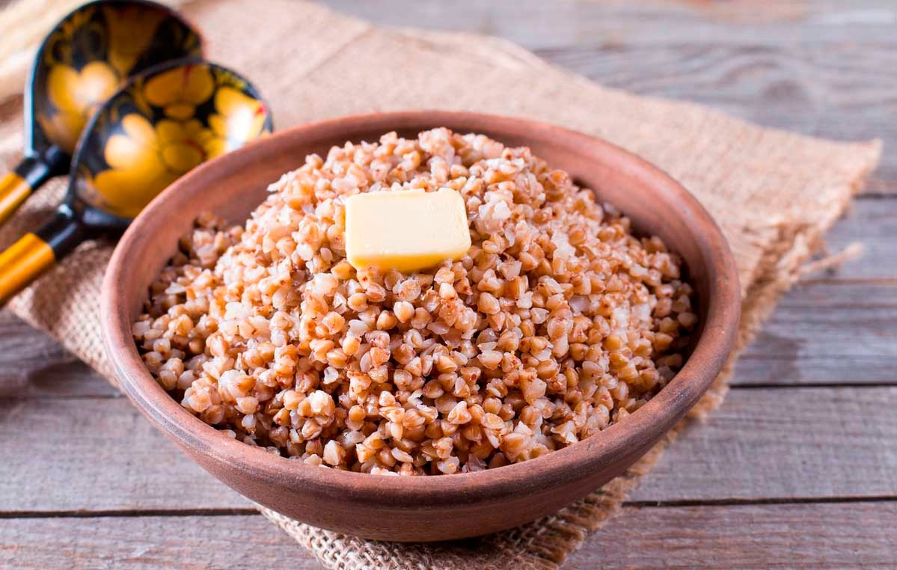
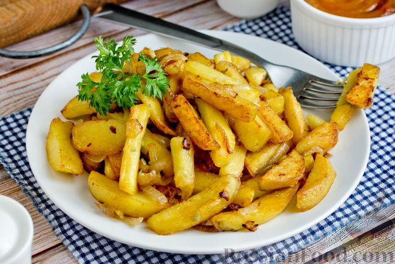

| Название блюда | Оценка 1-10 | Ссылка на рецепт | Фото |
|---|---|---|---|
| Суп солянка | 8/10 | Ссылка на рецепт | |
| Каша Гречневая | 6.5/10 | Ссылка на рецепт |  |
| Картошка жареная | 7/10 | Ссылка на рецепт |  |
| Суп Том-Ям | 9.3/10 | Ссылка на рецепт | |
| Салат сельдь под Шубой | 3/10 | Ссылка на рецепт |